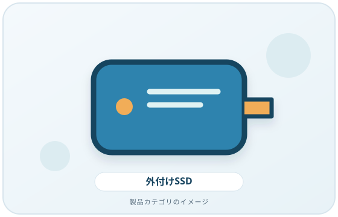
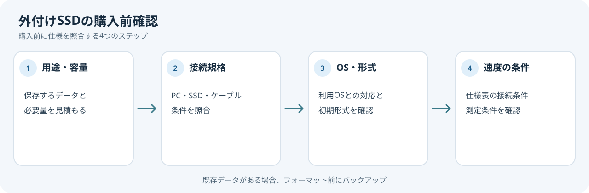

外付けSSDの仕様に高速な規格名が書かれていても、PCのポートやケーブルが同じ性能に対応しているとは限りません。購入前に接続経路全体を確認します。
画像・ボタンはAmazonアソシエイトリンクです。適格購入により紹介料を得る場合があります。

Amazon.co.jpで「外付け SSD」を探す ↗

まず用途と必要容量を決める
保存するファイルの種類、持ち運びの頻度、接続するPCの台数を整理します。必要な容量は使用するデータで変わるため、根拠のない一律のおすすめ容量ではなく、自分のデータ量と増加見込みから決めましょう。
仕様表で確認する4点
- 接続方式: SSDの端子とPCのポートが接続できるか確認します。USB-C端子であっても、対応データ規格は製品ごとに異なります。
- 速度の前提: 製品の速度表記がどのポート、ケーブル、測定条件で得られた値か確認します。USB-IFはUSB4などの仕様が複数のデータ・ディスプレイ通信を扱うことを説明していますが、その規格名だけで個別製品の実測速度は分かりません。
- OSとファイルシステム: 利用するOSとの対応や、初期フォーマット、必要な再フォーマットを確認します。Microsoftは、Windowsでボリュームをフォーマットするとパーティション上のデータが失われると説明しています。既存データがある場合は、操作前に別の場所へバックアップしてください。
- 持ち運び条件: 本体サイズ、ケーブルの着脱、保護ケースの有無、メーカーが案内する動作条件を確認します。
複数の機器で使う場合
Windowsと他のOSをまたいで使う予定なら、両方のOSで読み書き可能な形式か、共有方法を先に確認します。製品の仕様が分からないときは、メーカーのサポート情報に当たります。
購入前の確認メモ
- 保存するデータの種類と必要容量の見積もり
- PC・SSD・ケーブルそれぞれの端子と規格
- 利用するOSとファイルシステムの条件
- 速度表記に記載されたポート・ケーブル・測定条件
既存データが入ったドライブをフォーマットする前に、別の場所へバックアップします。仕様表の速度値は、記載された接続条件と測定条件をそろえて読みます。
まとめ
SSD、PCのポート、ケーブル、OSの条件をそろえてから候補を比較します。この記事では転送速度の実測、耐久試験、特定製品の評価は行っていません。
出典
- USB4 — USB-IF（確認日: 2026-10-07）
- USB Type-C and USB 2.0 Type-C Cable and Connector Guidelines — USB-IF（確認日: 2026-10-07）
- Windows File Recovery: supported file systems — Microsoft Support（確認日: 2026-10-07）
- Disk Management in Windows — Microsoft Support（確認日: 2026-10-07）